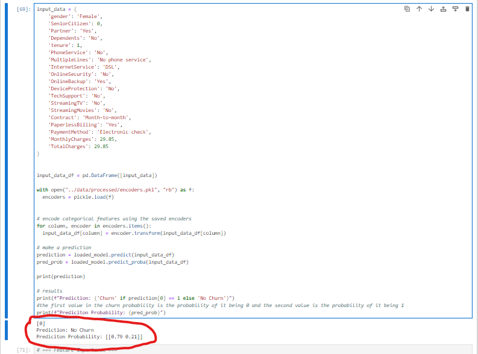
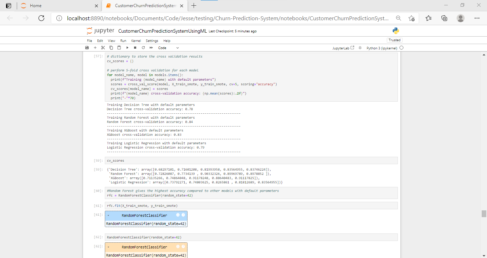
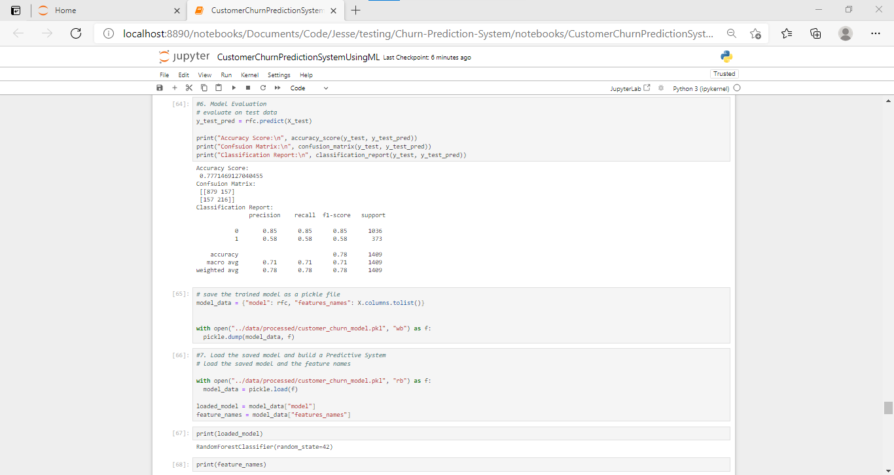
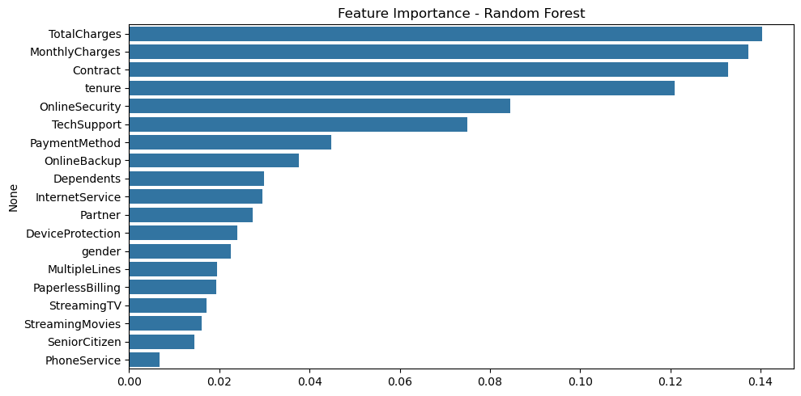
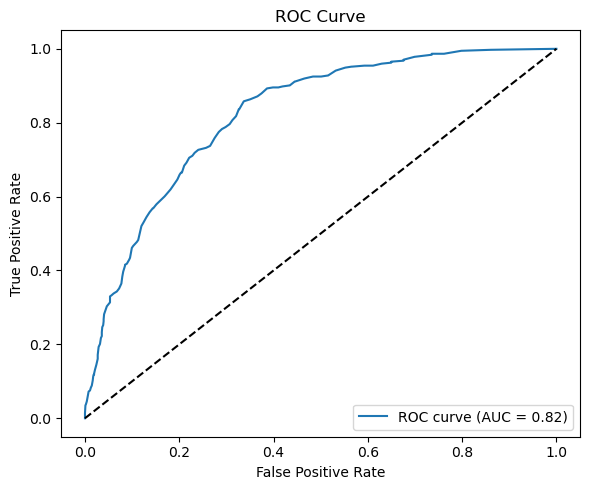
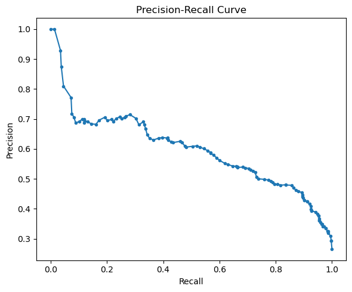

Customer Churn Prediction System
A comprehensive machine learning solution for predicting customer churn and driving retention strategies.
Project Screenshots






Project Overview
A sophisticated machine learning system that predicts customer churn, helping businesses proactively retain at-risk customers. Built with Python, Scikit-learn, and Random Forest, it features advanced data preprocessing, feature engineering, multiple ML models, comprehensive evaluation metrics, and actionable business insights for retention strategies.
Key Features
- Advanced data preprocessing and cleaning
- Feature engineering for payment, service usage, and customer behavior
- Machine learning models: Logistic Regression, Decision Tree, Random Forest, XGBoost
- Cross-validation, hyperparameter tuning, and model comparison
- Comprehensive evaluation metrics: Accuracy, Precision, Recall, F1-score, ROC-AUC
- Business intelligence: churn probability scoring and risk segmentation
- Insights for contract optimization, payment automation, and service bundling
- Strategic recommendations for proactive retention campaigns